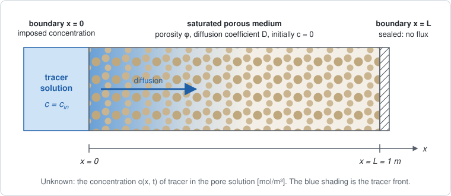
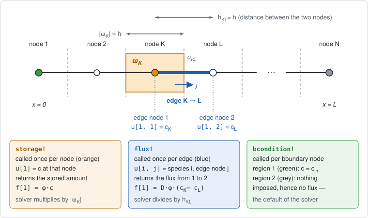
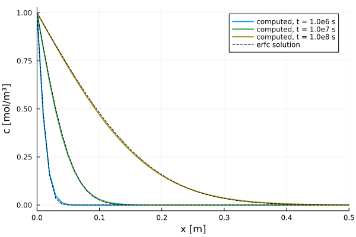

Getting Started
This page follows one simulation all the way through: from a sketch of the physical problem, to its equation, to the pieces a finite volume solver needs, to the Julia code that supplies those pieces, and finally to a plot of the result. The problem is deliberately simple, a tracer diffusing through a saturated porous medium. The steps, however, are the same for every finite volume model in the package, including the ones with several coupled unknowns.
- Describe the problem: the geometry, the unknown, and the boundary and initial conditions.
- Write the equation as a balance: accumulation + net outflow = 0.
- See what the solver asks for: the stored amount at a node, the flux between two neighboring nodes, and the boundary conditions.
- Write those pieces as methods of a model type.
- Build a grid, set the initial state, solve, and look at the result.
The package already ships this equation as FickModel, with per-region coefficients and its boundary data stored in a field. The page writes it again from scratch because what matters here is the mechanism, not the equation. It is called TracerModel so that the two names do not collide.
1. The problem to simulate

A slab of saturated porous medium, one meter long, initially contains no tracer. At $t = 0$ its left face is put in contact with a solution of concentration $c_\text{in}$. The tracer enters the pore solution and diffuses to the right. The right face is sealed, so no tracer can leave through it.
The slab is uniform across its section, so nothing changes in $y$ or $z$. The problem is therefore one-dimensional, with a single unknown: the concentration $c(x, t)$ of tracer in the pore solution, in mol per m³ of solution.
| Symbol | Value | Unit | Meaning |
|---|---|---|---|
| $\varphi$ | $0.30$ | — | porosity: volume fraction of the medium filled by the pore solution |
| $D$ | $10^{-10}$ | m²/s | effective diffusion coefficient of the tracer |
| $c_\text{in}$ | $1.0$ | mol/m³ | concentration imposed at $x = 0$ |
| $L$ | $1.0$ | m | length of the slab |
| $t_\text{end}$ | $10^{8}$ | s | simulated duration, about three years |
| Where | Condition | Type |
|---|---|---|
| everywhere, at $t = 0$ | $c = 0$ | initial condition |
| $x = 0$ | $c = c_\text{in}$ | Dirichlet: the value is imposed |
| $x = L$ | no flux through the face | homogeneous Neumann: the flux is imposed, equal to zero |
2. The equation, read as a balance
Tracer is neither created nor destroyed. In any piece of the medium, the amount stored can therefore change only by what flows in or out:
\[\underbrace{\frac{\partial (\varphi\, c)}{\partial t}}_{\text{accumulation}} \;+\; \underbrace{\nabla \cdot \mathbf{j}}_{\text{net outflow}} \;=\; 0, \qquad \mathbf{j} = -\,D\,\varphi\,\nabla c\]
The equation has two terms, and each one answers a separate question.
- The accumulation term answers how much tracer is stored here? $c$ is counted per m³ of pore solution, but only the fraction $\varphi$ of the medium is solution. So $\varphi c$ is the amount of tracer per m³ of porous medium [mol/m³]. Its time derivative is the rate at which that stored amount grows or shrinks.
- The flux $\mathbf{j}$ answers how much tracer crosses a surface? It is an amount per unit area per unit time [mol/(m²·s)]. Fick's law says that tracer moves from high to low concentration, which is where the minus sign comes from. The factor $\varphi$ is there because diffusion happens only through the pore solution.
- The divergence $\nabla \cdot \mathbf{j}$ is the net outflow per unit volume. When more tracer leaves a small volume than enters it, the stored amount decreases.
Substituting $\mathbf{j}$ gives the more familiar form $\varphi\, \partial c/\partial t = \nabla\cdot(D\varphi\nabla c)$. In one dimension:
\[\frac{\partial (\varphi\, c)}{\partial t} + \frac{\partial j}{\partial x} = 0, \qquad j = -\,D\,\varphi\,\frac{\partial c}{\partial x}\]
The boundary conditions can be stated in the same terms: $c = c_\text{in}$ at $x = 0$, and $j = 0$ at $x = L$.
Why write the equation as a balance rather than as $\partial c/\partial t = D\,\partial^2 c/\partial x^2$? Because the finite volume solver asks for exactly these two quantities, separately: the amount stored, and the flux. It handles the time derivative, the divergence and the rest by itself.
3. What the finite volume method does with it

The grid places $N$ nodes along $[0, L]$. Each node $K$ owns a control volume $\omega_K$ (orange), bounded by the midpoints between $K$ and its neighbors (dashed lines). Two neighboring nodes $K$ and $L$ are joined by an edge (blue), and their control volumes touch at an interface $\sigma_{KL}$.
The balance of section 2 is then written for each control volume. Integrate it over $\omega_K$ and replace the time derivative by a difference over one time step $\Delta t$ (implicit Euler, where $n$ is the current step):
\[\underbrace{\lvert\omega_K\rvert\; \frac{s(c_K^{n}) - s(c_K^{n-1})}{\Delta t}}_{\text{accumulation in } \omega_K} \;+\; \underbrace{\sum_{L\ \text{neighbor of}\ K} \frac{\lvert\sigma_{KL}\rvert}{h_{KL}}\; g\big(c_K^{n}, c_L^{n}\big)}_{\text{what leaves } \omega_K \text{ through its faces}} \;=\; 0\]
with
\[s(c) = \varphi\, c, \qquad g(c_K, c_L) = D\,\varphi\,(c_K - c_L).\]
$s$ is the stored amount. $g$ comes from the flux through the interface: along the edge, $j = -D\varphi\,\partial c/\partial x \approx D\varphi\,(c_K - c_L)/h_{KL}$, and $g$ is the numerator of that expression. It is positive when tracer goes from $K$ to $L$. In one dimension, $\lvert\omega_K\rvert = h$ ($h/2$ at the two end nodes), $\lvert\sigma_{KL}\rvert = 1$ (the interface is a point, counted per unit cross-section), and $h_{KL} = h$.
This splits the work in two:
| Piece of the discrete balance | In this problem | Provided by |
|---|---|---|
| stored amount $s$ | $\varphi\, c$ | you: storage! |
| flux $g$ between two neighboring nodes | $D\varphi\,(c_K - c_L)$ | you: flux! |
| boundary conditions | $c = c_\text{in}$ at $x = 0$ | you: bcondition! |
| number and names of unknowns | one unknown, $c$ | you: nspecies, species_names |
| geometry $\lvert\omega_K\rvert$, $\lvert\sigma_{KL}\rvert$, $h_{KL}$ | from the grid | VoronoiFVM |
| time derivative, sum over neighbors, Jacobian, Newton iterations, step size | — | VoronoiFVM |
Your functions never see a derivative, a mesh size or a loop. They describe the physics locally, at one node or on one edge. The solver calls them for every node and every edge and puts the results together.
4. Writing the model
4.1 The parameters: a struct
using PoroMechanics
using VoronoiFVM
using ExtendableGrids
Base.@kwdef struct TracerModel <: AbstractPoroModel
φ::Float64 = 0.30 # porosity [-]
D::Float64 = 1e-10 # effective diffusion coefficient [m²/s]
c_in::Float64 = 1.0 # concentration imposed at x = 0 [mol/m³]
endTracerModel is a type. It states that a tracer model has a porosity, a diffusion coefficient and an inlet concentration; it does not fix their values. Base.@kwdef provides default values and a keyword constructor, so TracerModel() uses the defaults and TracerModel(D = 2e-10) changes only D. <: AbstractPoroModel declares the type as a model of this package, which is what fvm_system accepts.
4.2 Generic functions, and methods for your model
storage!, flux!, bcondition!, nspecies and species_names are generic functions that belong to PoroMechanics. In Julia, a generic function is a name that can carry several methods, and the method that runs is chosen from the types of the arguments. This mechanism is called multiple dispatch. The package declares these functions without knowing any particular model. Called on a model that has no method of its own, storage! stops with the error storage! not implemented for ….
When you write
PoroMechanics.storage!(f, u, node, m::TracerModel, data) = …you add a method to that function. Julia uses it whenever the fourth argument is a TracerModel. Three consequences follow.
- The
PoroMechanics.prefix is required. Without it, you would define a new, unrelated function calledstorage!in your own session, and the solver would never call it. - The method is written for every
TracerModel, not for one set of values. It readsm.φandm.Dwhen it runs. The numbers are supplied later, when you create an instance such asm = TracerModel()and pass it tofvm_system(section 5). The same method works unchanged forTracerModel(D = 1e-9). - You never call these methods yourself. The solver calls them, for every node, every edge, every Newton iteration and every time step.
4.3 The anatomy of a callback
The three physics callbacks share the same argument list:
storage!(f, u, node, m, data) # at one node
flux!(f, u, edge, m, data) # on one edge
bcondition!(f, u, bnode, m, data) # at one boundary node| Argument | What it is | Who fills it |
|---|---|---|
f | the result: one entry per unknown, which you write into | you |
u | the values of the unknowns where the callback is evaluated | the solver |
node, edge, bnode | where the callback is evaluated: region number, coordinates, current time | the solver |
m | your model, with its parameter values | fvm_system |
data | a slot for user data in VoronoiFVM, unused here | the solver |
The ! at the end of the name is the Julia convention for a function that modifies one of its arguments, here f. The value the function returns is ignored.
4.4 What u[1] and u[1, 1] mean
The shape of u depends on where the callback is evaluated.
storage!andbcondition!look at a single node. There,uis a vector andu[i]is unknown numberiat that node. With a single unknown,u[1]is the concentration $c$ at that node.flux!looks at an edge, which has two nodes. There,uis a matrix andu[i, j]is unknown numberiat nodejof the edge, withj = 1or2. Sou[1, 1]is $c_K$ andu[1, 2]is $c_L$ (the blue labels in the figure above).
| Expression | Callback | Meaning |
|---|---|---|
u[1] | storage!, bcondition! | unknown 1 ($c$) at this node |
u[1, 1] | flux! | unknown 1 ($c$) at the first node of the edge, $c_K$ |
u[1, 2] | flux! | unknown 1 ($c$) at the second node of the edge, $c_L$ |
u[2, 1] | flux!, model with two unknowns | unknown 2 at the first node of the edge |
The first index counts unknowns, not nodes. In a model with two unknowns, for instance a liquid pressure and a temperature, u[2, 1] would be the temperature at the first node of the edge, and flux! would fill both f[1] and f[2], one flux per unknown.
"Node 1" and "node 2" here are local to the edge: its first end and its second end. They are not the nodes numbered 1 and 2 in the grid. The grid numbering only appears later, in the initial values (section 5.4).
4.5 storage!: the accumulation term
function PoroMechanics.storage!(f, u, node, m::TracerModel, data)
c = u[1] # concentration at this node
f[1] = m.φ * c # stored amount s(c) = φ c
return nothing
endThis is $s(c) = \varphi c$, the quantity inside $\partial/\partial t$, and not its derivative. The solver computes $(s^n - s^{n-1})/\Delta t$ and multiplies it by $\lvert\omega_K\rvert$.
4.6 flux!: the flux between two nodes
function PoroMechanics.flux!(f, u, edge, m::TracerModel, data)
c_K = u[1, 1] # concentration at the first node of the edge
c_L = u[1, 2] # concentration at the second node of the edge
f[1] = m.D * m.φ * (c_K - c_L) # g(c_K, c_L), the flux from K to L times h_KL
return nothing
endThis is $g(c_K, c_L) = D\varphi\,(c_K - c_L)$. The function returns a difference of node values, not a gradient, because the solver divides by the edge length $h_{KL}$ itself.
The sign follows a convention: f[1] is the flux from the first node to the second. When $c_K > c_L$ it is positive, and tracer moves from $K$ to $L$, down the concentration gradient. That makes the sign easy to check. Writing c_L - c_K instead would make tracer flow toward high concentration, and the computation would blow up.
4.7 bcondition!: the boundary conditions
function PoroMechanics.bcondition!(f, u, bnode, m::TracerModel, data)
boundary_dirichlet!(f, u, bnode; species = 1, region = 1, value = m.c_in)
return nothing
endA grid numbers its boundaries by region. For a one-dimensional grid built with simplexgrid, region 1 is the left end ($x = 0$) and region 2 is the right end ($x = L$).
bcondition! is called at every boundary node, in both regions. boundary_dirichlet!, a helper from VoronoiFVM, only acts when bnode.region equals the requested region. At $x = 0$ it adds a very large penalty term, proportional to $c - c_\text{in}$, to the equation of that node, which forces $c = c_\text{in}$. At $x = L$ it does nothing.
Doing nothing on a boundary means that no flux crosses it. The control volume of the last node has no neighbor on its right, so nothing is added to its balance through that side. The sealed face is the default and needs no code.
The shipped FickModel goes one step further: it stores the region and the value in a dirichlet field instead of writing region = 1 into the method, so that the same model can serve a slab fed from its other end.
4.8 nspecies and species_names: the unknowns
PoroMechanics.nspecies(::TracerModel) = 1
PoroMechanics.species_names(::TracerModel) = [:c]These two functions state how many unknowns the model has at each node, and what they are called. The argument is written ::TracerModel, with no variable name, because the answer depends only on the type and not on the parameter values: every TracerModel has one unknown, whatever its porosity.
fvm_system reads nspecies to declare the unknowns to the solver. That number is also the length of f and the first dimension of u in the callbacks. The names are there for humans, in plots and output.
5. Solving
5.1 An instance: the parameter values enter here
m = TracerModel()Main.TracerModel(0.3, 1.0e-10, 1.0)Up to this point, only types and methods have been defined. m is the first object that carries actual numbers.
5.2 The grid
grid = simplexgrid(range(0, 1.0; length = 101))ExtendableGrids.ExtendableGrid{Float64, Int32}
dim = 1
nnodes = 101
ncells = 100
nbfaces = 2This grid has 101 nodes and 100 cells, so $h = 0.01$ m.
5.3 The system: where the model meets the solver
sys = fvm_system(m, grid)VoronoiFVM expects callbacks with four arguments, (f, u, node, data), and knows nothing about m. fvm_system builds those callbacks, and each one captures m:
storage = (f, u, node, data) -> PoroMechanics.storage!(f, u, node, m, data)This is how the parameters reach the methods written in section 4. The anonymous function remembers m. Each time VoronoiFVM calls it, it passes m on to your method, which then reads m.φ.
5.4 The initial state
inival = unknowns(sys; inival = 0.0)
inival[1, 1] = m.c_in
size(inival)(1, 101)inival is a matrix of size (number of unknowns) × (number of grid nodes), and inival[i, k] is unknown i at grid node k. Here, inival[1, 1] is $c$ at the first grid node, at $x = 0$.
In flux!, the second index of u[1, 1] means the first node of the edge. In inival[1, 1], it means node number 1 of the grid.
Setting that one value matters. If it were left at zero, the Dirichlet node would jump from 0 to c_in during the first step. The step-size controller would see a change that shrinking Δt cannot reduce, and it would halve the step down to Δt_min before giving up.
5.5 Time stepping
control = VoronoiFVM.SolverControl(; Δt = 1.0e4, Δt_max = 1.0e7, Δu_opt = 0.1)
tsol = solve(sys; inival, times = (0.0, 1.0e8), control)times = (0.0, 1.0e8) gives only the start and end times. The solver chooses the steps in between and stores the solution after each one.
Δtis the first step, andΔt_maxis the largest step allowed.Δu_optis the change in concentration per step that the controller aims for, in the units of the unknown. If it is left at its default, a problem whose time scale is 10⁸ s is integrated with steps sized for a different problem.
5.6 Reading the solution
(length(tsol.t), maximum(tsol[1, :, end]))(44, 1.0)tsol[i, k, n] is unknown i at grid node k after step n. tsol.t lists the times of the stored steps. tsol(t) interpolates the solution at any time t within the simulated interval.
6. Looking at the result
On a semi-infinite medium, this problem has an exact solution:
\[c(x, t) = c_\text{in}\,\operatorname{erfc}\!\left(\frac{x}{2\sqrt{D t}}\right)\]
It applies here as long as the front, of width about $2\sqrt{Dt}$, stays far from the sealed face. At $t_\text{end}$ that width is 0.2 m, compared with $L = 1$ m.
using Plots
using SpecialFunctions: erfc
x = grid[Coordinates][1, :]
p = plot(; xlabel = "x [m]", ylabel = "c [mol/m³]", xlims = (0, 0.5), legend = :topright)
for t in (1.0e6, 1.0e7, 1.0e8)
plot!(p, x, tsol(t)[1, :]; lw = 2, label = "computed, t = $t s")
plot!(p, x, m.c_in .* erfc.(x ./ (2 * sqrt(m.D * t)));
ls = :dash, color = :black, label = t == 1.0e8 ? "erfc solution" : "")
end
p
The porosity does not appear in the exact solution. On a homogeneous medium, $\varphi$ multiplies both the accumulation and the flux, so it cancels. It no longer cancels across an interface between two materials of different porosity, which is why the model keeps it in both terms.
7. Where the Jacobian went
There is no Jacobian to write. VoronoiFVM.solve differentiates storage! and flux! with respect to u using ForwardDiff.jl, then runs its own Newton loop and adaptive time stepping. For that to work, u must be allowed to carry dual numbers instead of Float64. Do not annotate u as Float64. When a callback short-circuits, return zero(x) rather than a bare 0.0.
The models shipped with the package go one step further. Their parameter fields are type-parameterized instead of declared Float64, which lets a result be differentiated with respect to $D$ or $\varphi$ as well as $u$. See Parameter identification.
Summary
| In the equation | In the discrete balance | Callback | Code |
|---|---|---|---|
| accumulation $\varphi c$ | $s(c_K)$ | storage! | f[1] = m.φ * u[1] |
| flux $j = -D\varphi\,\partial c/\partial x$ | $g(c_K, c_L)$ | flux! | f[1] = m.D * m.φ * (u[1, 1] - u[1, 2]) |
| $c = c_\text{in}$ at $x = 0$ | penalty at the boundary node | bcondition! | boundary_dirichlet!(…; region = 1, value = m.c_in) |
| $j = 0$ at $x = L$ | nothing added | — | — |
| one unknown $c$ | size of f and of u | nspecies, species_names | 1, [:c] |
Next
The examples cover one worked problem per physics. Each gives its governing equations, its material data, and the reference solution it is checked against. They use the models the package ships instead of defining their own, which is the split this page explains. Writing a model measures what that choice costs and what it buys.